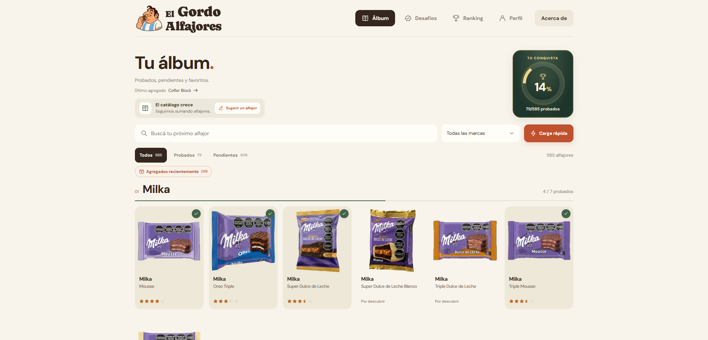
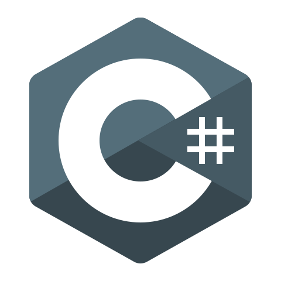

-
React
-
TypeScript
-

C# / ASP.NET Core
-
PostgreSQL
-
Docker
-
Neon
-

Cloudflare R2
Visitar el sitio web
Aclaración: El host no está 24/7 andando, sino que se levanta con una request, por lo que la primera carga puede tardar unos segundos.
Este es mi primer proyecto en el que delegué gran parte del desarrollo a la IA. Lo hice para experimentar con agentes de IA y explorar cómo trabajar con ellos para llevar una idea a una aplicación publicada.
El Gordo Alfajores es una aplicación web inspirada en los álbumes de figuritas, donde cada usuario puede construir su propia colección de alfajores probados. Permite explorar el catálogo por marca, buscar productos, guardar favoritos y consultar el progreso personal.
Marcar un alfajor como probado y reseñarlo son acciones independientes: se puede registrar el consumo sin puntuarlo, o agregar una calificación y una reseña con detalles sobre la cobertura, las tapas y el relleno. La comunidad también cuenta con perfiles, desafíos y rankings de personas y de alfajores.
El frontend está desarrollado con React y TypeScript, y se comunica con una API REST en C# / ASP.NET Core. Los datos se gestionan con Entity Framework Core y PostgreSQL, y el inicio de sesión utiliza Google OAuth. El catálogo puede consultarse sin crear una cuenta.
El sitio está publicado en Vercel, con la API en Render, la base de datos en Neon y las imágenes en Cloudflare R2. El entorno de desarrollo local utiliza Docker Compose.
El código no está disponible en este momento.
Por favor envíeme un email para darle acceso.
Gracias!